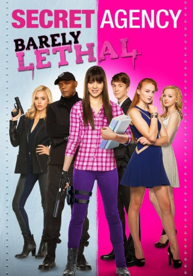

gesehen am 21.10.2015
gesehen am 21.10.2015Alternativ: Barely Lethal gesehen am 21.10.2015
 
 IMDB-Wertung: 5.4 / 10
IMDB-Wertung: 5.4 / 10  Metascore:
Metascore: 
Die sechzehnjährige Auftragskillerin Nr. 83 (Hailee Steinfeld) ist in der Lage blind Waffen zusammenzubauen und diese auch zielsicher zu benutzen, sie kann so gut wie ein Rennfahrer fahren und so zuschlagen wie Jackie Chan. Eigentlich wünscht sie sich jedoch nichts sehnlicher als eine normale Jugend zu haben - eine richtige Schule zu besuchen, Freunde zu finden und einmal auf eine Party zu gehen. Während eines Einsatzes beschließt sie daher ihren eigenen Tod vorzutäuschen und sich anschließend an einer Schule anzumelden. Als Austauschschülerin Megan Walsh muss sie jedoch bald feststellen, dass das Schulleben nicht so spaßig und einfach ist, wie sie es sich zunächst vorgestellt hatte. Ihre Lage verkompliziert sich zusätzlich, als ihr die skrupellose Terroristin Victoria Knox (Jessica Alba) auf die Schliche kommt.
Jahr: 2015
Dauer: 96 Minuten
FSK: 12
Land: USA Studio: A24Tonspuren: DTS - ,
Untertitel: Deutsch,
Auflösung: 1080p (1920x1040) Größe: 5355 MB
Genre: Action, Abenteuer, Komödie
Regisseur: Kyle Newman
Drehbuch: John D'Arco
Soundtrack: Mateo Messina
Darsteller:
 Jaime King als Analyst Knight
Jaime King als Analyst Knight Samuel L. Jackson als Hardman
Samuel L. Jackson als Hardman Hailee Steinfeld als Megan Walsh
Hailee Steinfeld als Megan Walsh Jessica Alba als Victoria Knox
Jessica Alba als Victoria Knox Bruno Gunn als Henchman Jones
Bruno Gunn als Henchman Jones Rachael Harris als Mrs. Larson
Rachael Harris als Mrs. Larson Gabriel Basso als Gooch
Gabriel Basso als Gooch Dan Fogler als Mr. Drumm
Dan Fogler als Mr. Drumm Rob Huebel als Mr. Marcus
Rob Huebel als Mr. Marcus Daniel Spink als Henchman Davey
Daniel Spink als Henchman Davey Ian Gregg als Second Guy , uncredited
Ian Gregg als Second Guy , uncreditedDatei: X:\2015(N-Z)\Secret Agency (2015, FSK, 1920x1040).mkv seit 01.10.2015
Festplatte: HD 2015(A-Z)
 Es gibt insgesamt 161 Filme in der Gruppe '2015(N-Z)'
Es gibt insgesamt 161 Filme in der Gruppe '2015(N-Z)'